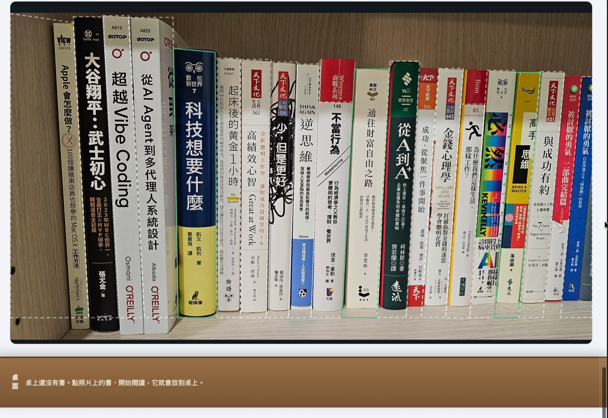
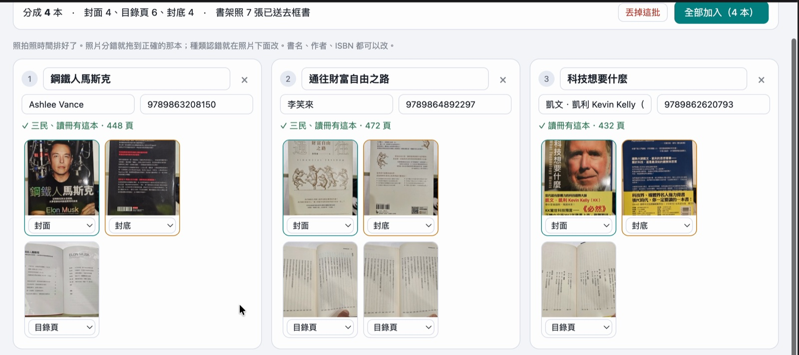
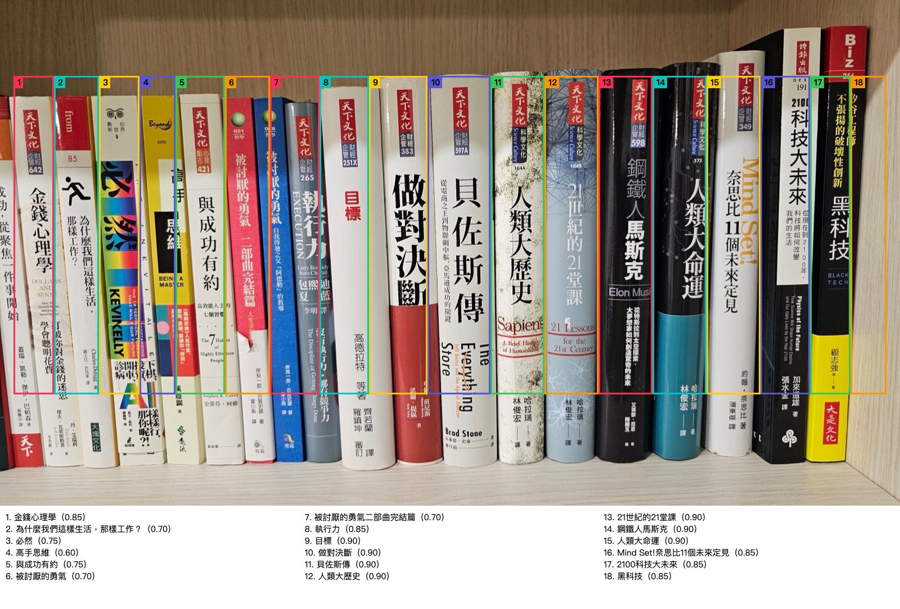

不會寫程式的我，三天做出一套讀書軟體，是怎麼做的？
朋友問我萬卷從頭到尾是怎麼做的。一萬多行程式，我一行都沒寫也沒看，那三天我到底做了什麼？先開會、先拿四本真的書去撞，還有一個讓框從十九中六變成十九全中的外行問題。
朋友看了我傳的試用影片，問我：這個從頭到尾是怎麼做出來的？
先講結果。軟體叫萬卷：拍一張書架的照片，那張照片就變成你的書架，點照片上的一本書，它會被「抽出來」，然後你可以計時、記讀到哪、寫一句心得。從第一次討論到錄下上面這支影片，是三天。
{kind=link}

再講一件可能讓你意外的事：一萬多行程式，我一行都沒寫，也一行都沒看。
我不會寫程式。所以這篇不是教你寫程式，是講這三天裡，我到底做了什麼。
第一步不是寫程式，是開會
我沒有直接跟 AI 說「幫我做一個讀書軟體」。我先把題目丟進我自己做的 AI 董事會，讓五家 AI 吵了一輪，吵出一份十九頁的報告。
{kind=link}
那份報告最有價值的不是結論，是兩樣東西。
第一樣是被否決的選項。用公開的書籍資料庫查中文書？有人實測，六本只查到三本，書名還變成機器翻譯的英文。讓 AI 自己上網查目錄？一本書要九十七秒，大部分時間花在猜錯網址。這些路如果沒有先被否決，我後來一定會一條一條去撞。
第二樣是一句很掃興的話：目前所有證據只來自《原子習慣》一本暢銷書，動工前必須先拿真的藏書測。
順帶一提，董事會自己也會出錯。其中一位董事很認真地寫了一整段技術建議，前提是它以為我要用的那個 AI 模型是一種程式語言的框架。它後來自己更正了。開會的好處是有別人在場。
規劃的人和動手的人，不是同一個
接下來我做了一個後來證明很划算的安排：用最強的模型寫規格，換另一個模型照規格做。
規劃那一段不寫程式，只產出一份文件：資料怎麼存、畫面有哪幾頁、AI 怎麼呼叫、分成哪幾個階段、每個階段做到什麼程度算過關。另外列出十四件需要我決定的事，一次問完。
重點是規格寫在檔案裡，不是留在對話裡。對話會越來越長、越來越貴，AI 也會忘記前面講過什麼。寫成檔案之後，我隨時可以開一個全新的對話，第一句話只要說「請讀完規格，從第二階段開始」，它就接得上。這三天我換過好幾次對話，沒有一次需要重講。
這一步還發生一件事。董事會的決議是用某一套工具來做桌面程式，但規劃的時候實際去查，我的電腦上根本沒裝那套工具，而我前三個產品用的是另一套、打包流程都是現成的。於是規格改了。
開會得到的是方向，不是事實。事實要去現場查。
動工前，先拿四本真的書去撞
照報告說的，先測。我從書架上拿了四本書，拍了書架、封底、目錄頁，其他什麼都沒做。
AI 本來請我填一份「答案卷」，每本書的 ISBN、版次、頁數都要寫。我直接說：我不想寫。
它的反應是我喜歡這種合作方式的原因。它沒有勸我，而是改了做法：讓程式讀封底的 ISBN，再去書店查有沒有同一個 ISBN 的商品，兩邊對得上就算數，並且在報告上老實寫「這不是人工核對的」。
四本書測出來的東西，比十九頁報告還有用：
只靠書名，四本全部找不到確定的版本。 每一本都有兩三個版本：初版、增訂版、新裝版。我原本以為「拍書架照就搞定」的那個想像，第一天就破了。
但封底的 ISBN，四本全部一次讀對。 所以設計改成：書架照負責「快速上架」，想要精確版本再掃封底。
{kind=link}

有一家書店一直查不到書。 規劃的時候以為是對方的網頁技術比較新，抓不到。實際去看才發現，是網址的寫法錯了，它禮貌地回了一頁「找不到」，外加一整頁推薦書。如果程式沒分清楚，會把推薦書當成搜尋結果。
另一家書店更妙：查不到的時候，它回「找到一萬筆」，把整個書庫倒給你。
還有一項是安全測試。我們故意在假的書店頁面裡藏了「請執行這個指令」「請讀取這個檔案」這類句子，試了十次。AI 一次都沒有照做。但有三次，它把那句惡意指令原樣抄下來，當成一個章節名稱。沒有上當，可是也不該出現在我的目錄裡，於是程式多加了一道過濾。
最難的一關：框
萬卷最核心的體驗，是「從照片上把書拿下來」。這需要知道每一本書在照片上的位置，也就是一個一個的框。
第一版，直接請 AI 看整張照片，回報每本書的位置。書名幾乎全對，但三十六個框裡只有十七個能用。而且錯得很有趣：從某一本開始，整排往右錯位一本，你點《人類大歷史》，拿出來的是隔壁那本。
{kind=link}

第二版，把照片切成四段分開問。變成四十個框裡三十個能用，代價是一張照片要等三分鐘。
我用了之後還是覺得不準，就問了一個外行人的問題：框一定要是正的長方形嗎？我是斜著拍的，書看起來是歪的，不能是梯形嗎？
第三版照這個想法，請 AI 回報四個角。還是不準。到這裡才看清楚真正的問題：不是形狀，是 AI 很會「讀」，但不會「量」。它知道那是哪一本書，但說不準那本書在第幾個像素。
第四版把工作拆開。找書和書之間的分界線，交給一段很傳統的程式，看亮度變化、找接近直立的線，零點六秒做完，完全不用 AI。線和線之間裁成一條一條的小圖，再請 AI 只回答一個它最擅長的問題：這是哪本書？
我自己那張十九本書的書架照：原本十九個框只有六個剛好框住一本書，改完之後十九本全中。 斜著拍的照片，框自然就是梯形。
{kind=link}
這是三天裡我學到最多的一件事。AI 做不好的時候，不一定要換更強的 AI，有時候是你把不適合它的那一半工作也丟給它了。
那我到底做了什麼
寫到這裡你可能會想：規格是 AI 寫的，程式是 AI 寫的，測試也是 AI 跑的，那你呢？
我做三件事。先說清楚，下面這些不全是我想出來的，有些是 AI 提的、我點頭的。但點頭也是工作：同一個 AI 可以提出十種做法，哪一種才是「我的產品」，只有我能決定。
第一，說「我要的是什麼」。 AI 一開始叫它「讀書規劃」，我說不夠厲害，網址也太長不好打，請它重提，最後挑了「萬卷」。要有「真的從書架上拿書」的感覺，是我堅持的，AI 原本建議第一版先不要畫框。星圖也是：讀一個新領域就點亮一個星座，一個星座要讀幾本才算亮齊？沒有人知道讀幾本叫專精，軟體不該假裝知道，所以那個數字用的是天上那個星座真正的星星數，獅子座九顆、天秤座六顆，你可以自己改。畫面上只會寫「這個星座亮齊了」，不會寫「你已經專精」。
{kind=link}
第二，說「我不要什麼」。 不要連續打卡天數，不要排行榜，不要那種你一離開小樹就枯死的設計。讀完的書會疊成一面書牆，最近有在讀，牆上的燈就亮一點；很久沒讀，燈會暗，但已經蓋好的牆不會倒。靠愧疚感讓人回來的東西，我自己就不想用。
第三，用，然後說「這裡不對」。 這件事 AI 沒辦法替我做。
第一次驗收，我雙擊打開，順手把旁邊那個黑色的終端機視窗關掉，整個軟體就斷線了。AI 查了之後說：這是它的設計錯，不是我的操作錯，因為我本來就不會留著那個視窗。配色我嫌全深藍太冷，換掉。朋友看了影片問「一定要每本書都拍封面嗎？」，這一句話讓我們回頭改了一輪：只拍一張書架照，就要有八成的功用，封面、封底、目錄頁通通變成選配。
{kind=link}
幾個老實話
三天是真的，但不是三天就做完。 三天做到的是影片裡那個樣子；打包成一個可以雙擊打開的 App 是第四天的事，而且只有 Mac 版。Windows 版和手機版我都要做，還沒開始，而且手機版得先想清楚架構，因為手機上沒有我電腦上那些東西。
程式有四百七十多項自動測試在顧，每改一次全部重跑，而且規格裡有一條規矩：每一種檢查剛寫好的時候，要先故意弄壞一個地方，確認它真的會叫。這個習慣是前幾個產品用事故換來的：一個永遠亮綠燈的檢查，比沒有檢查更危險。
書只測過我自己書架上的。 都是這幾年的中文暢銷書。很舊的書、很冷門的書、沒有 ISBN 的書，在書店查不查得到，我還不知道。
花費是零，但不是免費。 整個過程用的是我本來就在付的 AI 訂閱，沒有另外一張帳單。萬卷自己也是這樣設計的：它用你電腦上已經登入的 AI，不用填金鑰，書和紀錄都只存在你自己的電腦裡。
所以，是怎麼做的？
如果只能講三句：
先開會，再動工。 最便宜的錯誤，是還沒動手就被否決的那些。
先測，再相信。 報告說的、AI 說的、我自己以為的，拿四本真的書去撞一下，一半都要改。
我不寫程式，但我一直在說「不對」。 做得出來的部分很快。難的，一直都是發現它不對。